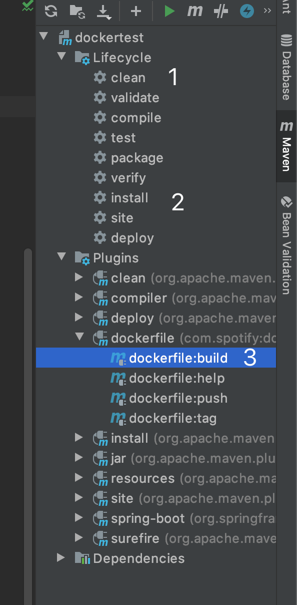
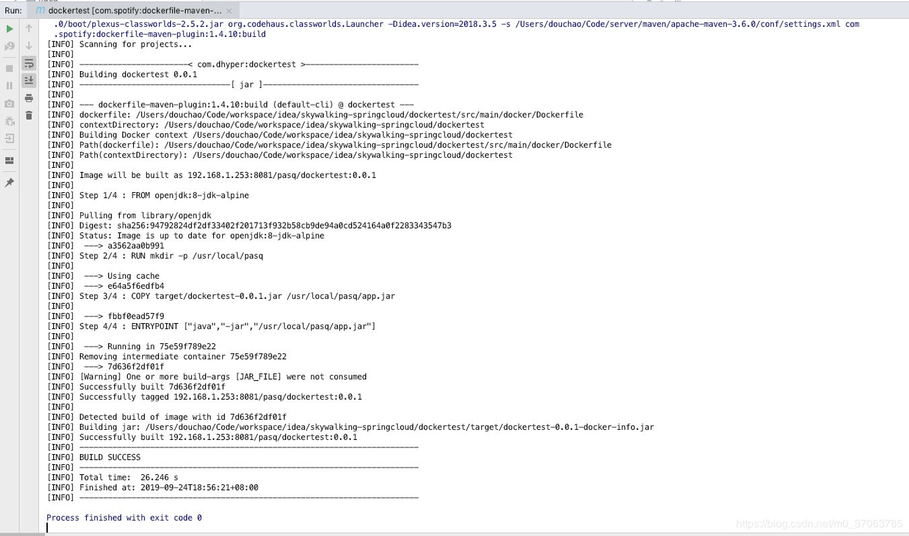

[root@master images]# kubectl get nodes #再次查看master状态，发现已经成为了“Ready” NAME STATUS ROLES AGE VERSION master Ready master 30m v1.15.0 [root@master images]# ls /etc/kubernetes/ #k8s的配置文件目录 [root@master images]# ls /etc/kubernetes/manifests/ #k8s的.yaml文件存放目录
kubectl get pv NAME CAPACITY ACCESS MODES RECLAIM POLICY STATUS CLAIM STORAGECLASS REASON AGE mysql-pv 1Gi RWO Retain Bound default/mysql-pvc nfs 5m8s kubectl get pvc NAME STATUS VOLUME CAPACITY ACCESS MODES STORAGECLASS AGE mysql-pvc Bound mysql-pv 1Gi RWO nfs 60s
5、创建 pod+svc（service）
这个 pod 是提供的 MySQL 服务，并将其映射到宿主机，可以做和 client 端通信。
这里我将 pod 和 svc 的 yaml 文件写在同一个文件中。
1 2 3 4 5 6
vim mysql-pod.yaml #编写pod的yaml文件 # 内容参见下一段代码 kubectl apply -f mysql-pod.yaml #执行yaml文件 kubectl get pod #确定pod运行正常 NAME READY STATUS RESTARTS AGE mysql-6d898f8bcb-lhqxb 1/1 Running 0 51s
kubectl exec -it mysql-6d898f8bcb-lhqxb -- mysql -uroot -p123.com mysql> create database test; mysql> use test; mysql> create table my_id(id int(4)); mysql> insert my_id values(9527); mysql> select * from my_id; #确认有数据存在
7、手动删除节点上的容器，验证数据库内的数据是否还存在
1 2 3 4 5 6 7 8 9 10 11 12 13 14 15 16
kubectl get pod -o wide #查看pod运行在哪个节点 NAME READY STATUS RESTARTS AGE IP NODE NOMINATED NODE mysql-6d898f8bcb-cz8gr 1/1 Running 0 10m 10.244.1.3 node01 #我这是运行在node01节点，现在去node01节点手动将其容器删除 [root@node01 ~]# docker ps #查看MySQL容器的ID [root@node01 ~]# docker rm -f 1a524e001732 #将MySQL的容器删除 #由于Deployment的保护策略，当删除容器后，它会根据pod的yaml文件生成一个新的容器，但新容器的ID号就变了 #回到master节点，登录到数据库，查看数据是否还存在 kubectl exec -it mysql-6d898f8bcb-cz8gr -- mysql -uroot -p123.com mysql> select * from test.my_id; #数据还在，OK +------+ | id | +------+ | 1996 | +------+ 1 row inset (0.01 sec)
至此，即可证明，当使用 PV 来做数据持久化的话，容器的新陈代谢并不会造成丢失数据的。
8、模拟 MySQL 容器所在的节点宕机，验证数据是否会丢失
1 2 3 4 5 6 7 8 9 10 11 12 13
kubectl get pod -o wide #查看容器所在节点，我这里还是在node01 #然后我这里将node01关机，然后动态查看pod的状态 kubectl get pod -o wide -w #动态查看pod的状态 #大概node01关机五分钟左右，可以看到pod就被转移到node02上运行了。 NAME READY STATUS RESTARTS AGE IP NODE NOMINATED NODE READINESS GATES mysql-6d898f8bcb-cz8gr 1/1 Running 0 20m 10.244.1.3 node01 <none> <none>
# 部署数据库 docker run --name mysql -e MYSQL_ROOT_PASSWORD=123456 -p 3306:3306 -d mysql:5.7.22
docker exec -it mysql bash
mysql -uroot -p
# grant all privileges on *.* to root@'%'; grant all privileges on *.* to root@'%' identified by "123456"; select host,user from mysql.user; create database mysqlforspring;
#基础镜像，如果本地仓库没有，会从远程仓库拉取 FROM openjdk:8-jdk-alpine #容器中创建目录 RUN mkdir -p /usr/local/pasq #编译后的jar包copy到容器中创建到目录内 COPY target/dockertest-0.0.1.jar /usr/local/pasq/app.jar #指定容器启动时要执行的命令 ENTRYPOINT ["java","-jar","/usr/local/pasq/app.jar"]
1.1.2. 构建镜像并推送
构建镜像，执行如下命令  构建镜像日志如下 
完成后docker images可以查看打包的镜像
1 2 3 4
docker images REPOSITORY TAG IMAGE ID CREATED SIZE 192.16.1.100/test/dockertest 0.0.1-SNAPSHOT 2199bdadb586 8 hours ago 122MB 192.16.1.100/test/dockertest 0.0.2-SNAPSHOT 2199bdadb586 8 hours ago 122MB